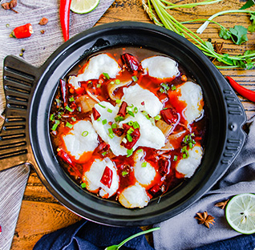
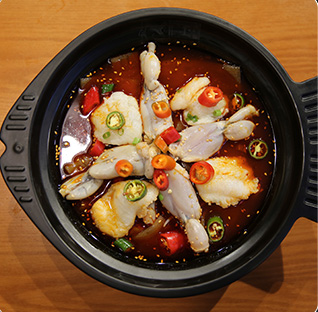

< 葵中品质让合作伙伴一开始就赢了 >


2017年是酸菜鱼的风口，葵中发力直营样板市场，平均每家店完成270万销售业绩，为品牌进行全国招商打下坚实基础，面对酸菜鱼品类日益成熟，葵中快速启动新品研发，并完成品牌战略升级。
这一次，葵中凭借多年的直觉和经验，将爆款方向锁定在牛蛙快餐化上面，百度搜索指数显示，“牛蛙”一词的热度，从2018年一月份开始陡然升高，之后30天的搜索量环比上升了23%。大数据对葵中判断的印证，让“鱼蛙双椒”这个新品类快速进入市场。通过北京万达商圈的实际运营数据来看，鱼蛙双椒的出现，让葵中单店增收超过35.2%，并且收录“北京美食地图”，成为时下热门的超人气网红美食。